Depth Predictions in Art
This post accompanies our open-sourced visualization.
Painters throughout art history have used various techniques to represent our three-dimensional world on a two-dimensional canvas. Through deliberate use of linear and atmospheric perspective, hard and soft edges, overlay of shapes, and nuanced hue and saturation, painters can rendered convincing illusions of depth on flat surfaces. These painted images, with varying degrees of “depth illusion" can also be interpreted by something entirely different: machine learning models.
Models for depth prediction are usually trained on realistic photo/video data. However, exploring how models perform on artwork also produces some interesting results. We found that such models can perform surprisingly well on these images. In our project, we qualitatively explore the depth interpretations of a database of art history images, looked at how models perform on optical illusions, and experimented with generating adversarial examples.
We’ve created an open-source, interactive visualization to explore many of these depth interpretations.
Depth Prediction Models
From an RGB image input, the depth prediction model we use chooses a scalar ‘depth’ value for each pixel somewhere between black and white, where lighter pixels are understood as closer and darker pixels as farther away.
Art History Dataset
Our dataset is 63,000 paintings from collections from the MET and the Rijksmuseum, with paintings from infrequent art styles filtered out. Unfortunately, due to a skewed dataset, this resulted in mostly Western styles. A future research direction is to analyze other styles more deeply; the treatment of depth in art varies widely through different locations and eras, and having that data would give us a much richer exploration. For example, ancient Chinese artwork often employs isometric perspective, a totally different system of portraying depth than the Renaissance style of linear perspective. How would this change the output of the model? However, for now, our exploration was limited to artworks in the filtered styles.
We ran this dataset through a deep learning model that outputs a predicted depth map. This model learned to interpret 3D shape by observing tens of thousands of scenes shot with a moving camera, as in prior Google research.
Visualization
We then created an interactive visualization that allows for exploration of these paintings and their depth maps over time, displaying examples in an interactive point cloud projection.
Point Cloud Projection
It can be hard to tell which parts of the image are in front of others in a more detailed image with finer value gradations in the depth map. It isn’t always easy to imagine what a depth map looks like in three dimensions.
We created a 3D-view of the original image using the depth-map prediction values, by projecting each pixel into the third dimension with its depth value as its z-position. The three-dimensional view of the depth prediction revealed many errors that are harder to pick up in just a flat depth map, and provides a more intuitive interface for gauging the success of a prediction.


The three-dimensional view of the depth prediction revealed many errors that are harder to pick up in just a flat depth map, and provides a more intuitive interface for gauging the success of a prediction.
Graph Mode
The depth figure in the web app’s Graph Mode plots paintings by their year and depth range, color-coded by their art movement. Pan and zoom on the plot in the app and select points to see their paintings in the viewer.
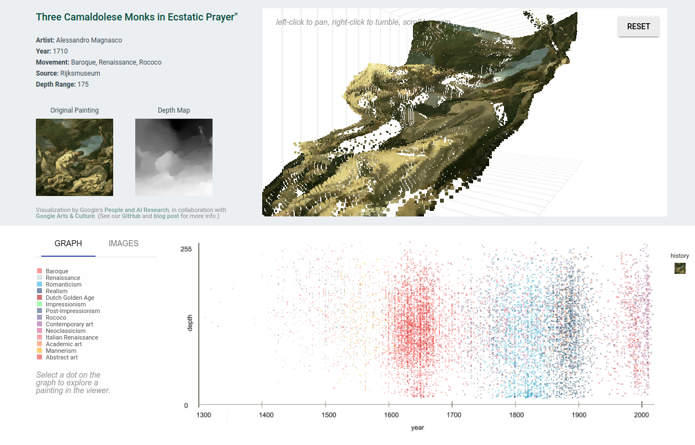Image Mode
Image mode displays a list of paintings chronologically. Paintings can be selected for display in the viewer.
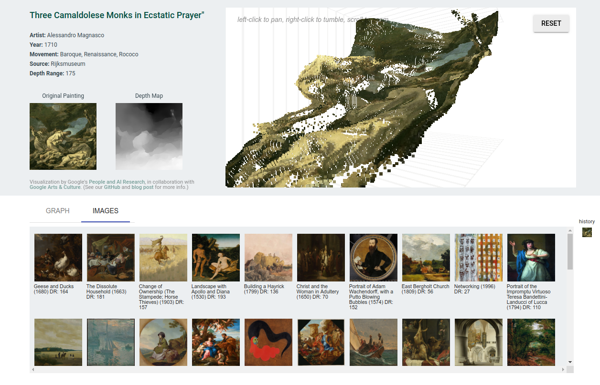Observations
In addition to exploring the overall depth trends through time and by style, the visualization can also be used for finding edge cases and error cases of the model used to make the predictions.
It should be noted that different models will exhibit different kinds of failure modes, depending on a few things including their training data, architecture, and assumptions underlying the training. For instance, the data used to train this specific model often had depth edges coincident with color edges, which may contribute to some of the observations below; other depth predictions models might not exhibit such issues, but may exhibit others.
Also, as mentioned above, art is entirely outside of the training distribution, so it’s not surprising that the model sometimes struggles with it (indeed, it’s impressive how well the model does extrapolate to this unseen data). However, seeing overall trends with certain types of images, styles, and features can hint at the underlying prediction mechanism.
Frames
Frames and borders sometimes seem to cause the depth map to flatten. Of course, this is in some ways by design-- the model might be using the frame as a clue that the image is really an image of a flat painting, rather than a 3D scene. Still, it’s an interesting question of why the frame flattens the image, rather than acting as a window into the scene.
Incidentally, the idea that frames distinguish art from the rest of the world is studied in the art world as well. In this essay, Ke-bing Tang argues that frames serve as a “boundary mark of identifying the art and reality.” Similarly, Paul Duro says that with the frame, “we experience the illusory coherence of the artwork,” and that it is “a marker of limits.”
Another note about frames is that they often aren’t interpreted as being consistently on the same plane, with changes in depth along the border. It would be interesting to explore this further.
 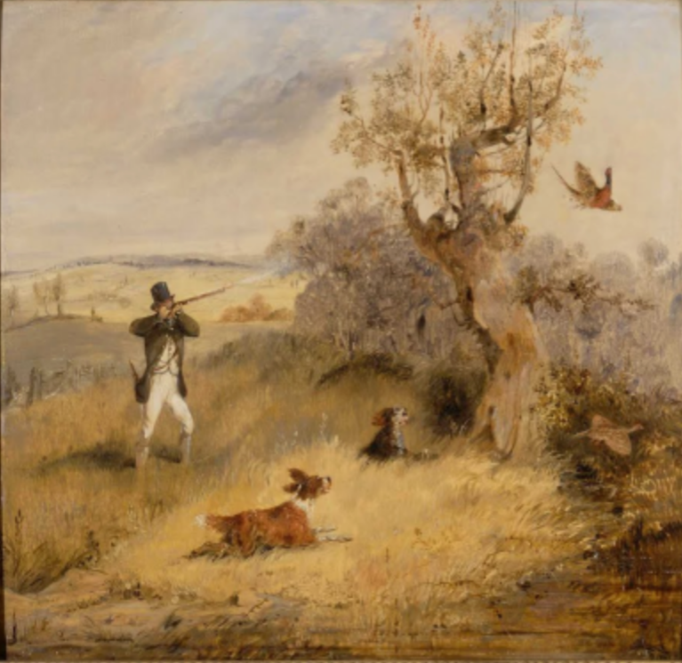
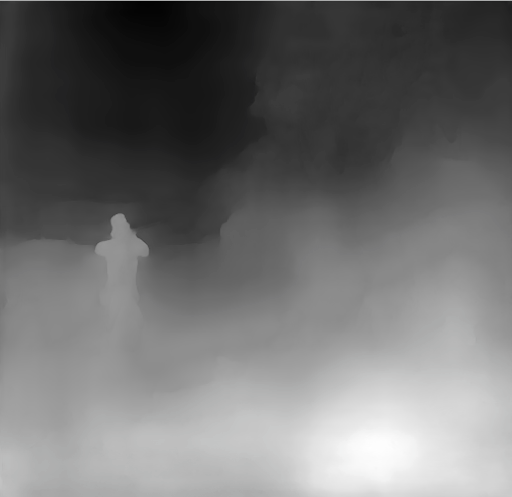
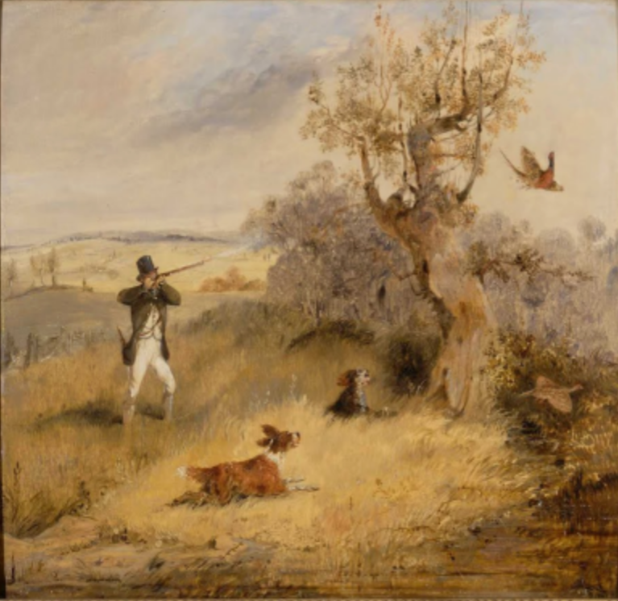
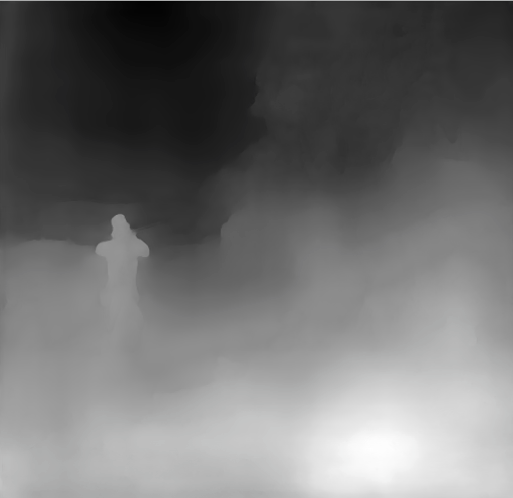

Faces
In portraiture, faces are often painted to be more dimensional and are brightly lit to stand out as a focal point, with a flatter, more muted rendering of surrounding areas. We found that in depth predictions for portraits, the face is often sharply brighter than the background and juts out of the canvas.
Based on the skew toward Western art traditions in this data set, we additionally checked whether the effect seemed to hold for a wider variety of skin types. Indeed, as seen below, this seems to be the case.


Effect of flipping images
The model outputs flat depth maps for some images and detailed depth maps for their horizontally reflected counterparts.
Looking at Depth across Different Styles
A natural question is whether there are trends in the model across time and styles. In the Western tradition, many of the depth techniques described earlier (namely linear perspective) were matured around the time of the Renaissance in the fifteenth and sixteenth centuries. Then, starting around the end of the nineteenth century, many Modern Art movements began to break from this tradition of portraying illusionistic depth in representational images and began to abstract their subjects. In addition, while the classical Western art tends to pursue illusionistic realism, some non-western traditions of painting have long gravitated towards flatter colors and more stylized representations of nature.
So, we initially expected there might be an increasing trend around 1500, and a decreasing trend in the 1900s due to the development of perspective and the later modern art movements that flattened illusionistic paintings.
But how do you measure this? There are various metrics to approximate the overall depth of the image given by the model, that is, a scalar depth value for the image from the pixels of the depth map. We tried median, range (maximum depth - minimum depth), and standard deviation.
We then calculated the mean and standard deviation of the distribution of these metrics for two groups of paintings:
- Realistic / naturalistic: Academic art, American Realism, Realism, Neoclassicism
- Non-realistic / abstract: Non-realistic / abstract: Street art, Abstract art, Geometric abstraction, Shin-hanga, American modernism, Ukiyo-e
Surprisingly, we found that there isn’t much statistical significance for these depth metrics across the two style groups.
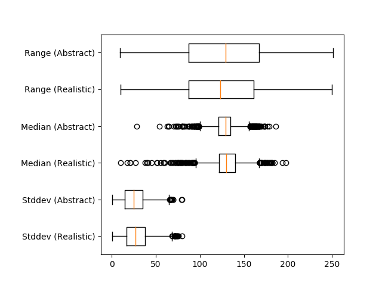Similarly, plotting a number of art movements’ aggregate depth values over time, we found they also fall within a similar range. Note that the error bars are for standard deviation in the y direction, and year in the x direction, for a number of art movements,
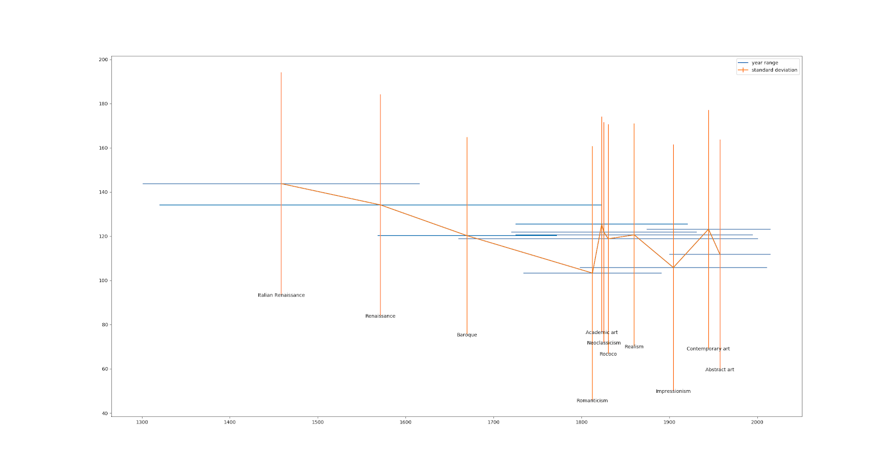The fact that depth doesn’t seem to be correlated with either time or artistic style raises an interesting question. Which is wrong, our interpretation of depth in art history, or the model’s interpretations of the images?
Of course, all these metrics have a potential flaw: perhaps some depth image outputs are not just flat or deep, but actually incorrect. This, of course, is impossible to calculate as we have no ground truth of depth for these images. A future direction could be to try and find an uncertainty measure for the depth, and if this correlates more with art movements.
Other Out-of-Distribution Images
Optical Illusions


In the context of depth prediction, impossible object illusions are another set of interesting image examples. For example, in the image above, the water is simultaneously flowing away from the wheel along the trough, but also back toward the waterfall, which is directly above the wheel (there are also a few other hidden impossibilities in the picture).
These images purposefully depict physically impossible objects or spaces, so no true depth map can exist. How, then, will the model react when it is forced to make a depth prediction? Will it look at local edges or try to glean some global structure from the image? It’s hard to quantitatively analyze this or make a generalizable conclusion, but from this example of an Escher print, the model does seem to be trying to impose some sort of global structure on the image. That is, the water trough does seem to be interpreted as a single cohesive element which uniformly moves into the background, rather than being bent to satisfy the constraint of the towers.
Generating Adversarial Examples
The out-of-model-distribution artworks described in the previous section can act as adversarial examples to explore the model’s capabilities. What about generated adversarial examples, in the machine learning sense?
We also played with with generating adversarial examples for depth models using the standard gradient descent approach (see generation script here). These experiments were on this open-source DenseDepth model.
In one example, we started with this image of a bathroom sink (left), which produces the corresponding depth map (middle), and we tried to manipulate the input image so that the output depth map was that of the bathtub (right).

 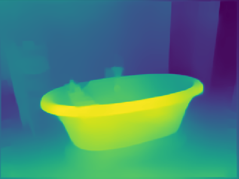
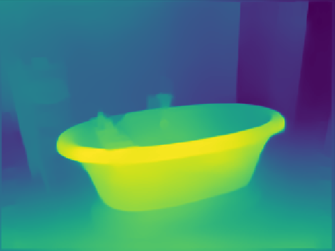
We ran gradient descent, altering the image input to with the loss as the mean-squared error of the difference between the generated depth output and the target depth output. After 250 iterations with a step size of .001, we generated the following:
 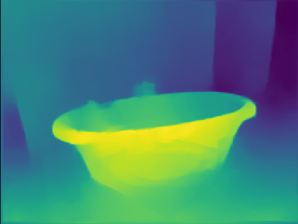
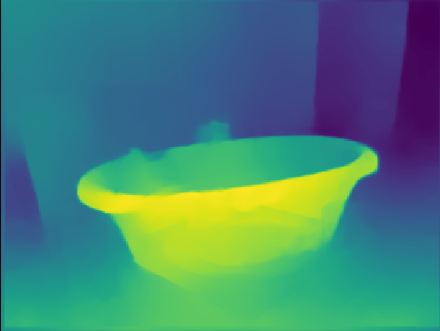
Conclusion
As with many machine learning models, depth prediction models can be hard to accurately evaluate and debug. However, there has been much less work on interpreting their failures than there has been on other image models. This raises some interesting questions. When they fail, how do they fail? What kind of adversarial examples can we generate to force them to fail? And how, overall, are they making predictions?
One lens through which to approach this is art history: humans have been attempting to define and control two dimensional depth representations for millennia, and perhaps we can take advantage of this. By observing how the model performs on images that are out of its training distribution in some ways (but not all), we can begin to isolate and explore what factors the model may be focusing on to make its prediction. We hope that this visualization interface in dataset can be helpful to other researchers in qualitatively exploring their models as well.